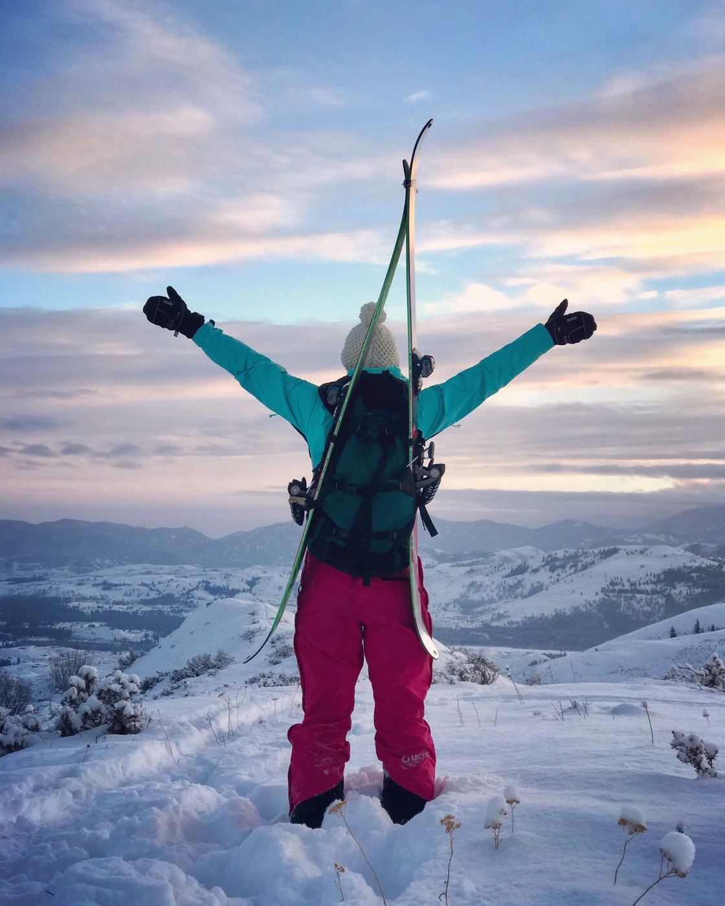

Featured Writing · LinkedIn
8 years in the making: how I became managing partner at 26.
Read the full piece on LinkedIn →
Meraki Ascent is a multi-disciplinary consulting practice for founder-led, values-driven companies. The brand is personal because the work is too.


Some names just don't fit. You try something on and it's close, but it's not quite right. Too stiff. Too generic. Too corporate.
I'm an outdoor enthusiast and an athlete. The kind of person who finishes one goal and is already eyeing the next one. Born and raised in Winthrop, with a few peaks behind me literally and figuratively. Five-plus years building revenue operations, business development, and digital marketing across founder-led companies and impact funds. Most recently leading social and digital for Gamble Sands.
When I started building my own practice, I knew the name had to carry that energy. Gravity. Groundedness. Depth.
Ascent came naturally after that. Because what is Meraki without direction? Passion without progress is just energy with nowhere to go.
Most days you'll find me outside. Skiing, hiking, sailing, on the trail with my dog Layla. The discipline and the patience that the climb requires aren't a metaphor I picked up for the brand. They're how I move.
The work shows up the same way. Slow when slow matters. Steady. With everyone I bring along, very much included.
A Greek word with no perfect English translation. To do something with soul, creativity, and love.
For us: pouring yourself fully into the work. The opposite of going through the motions.
The act of climbing or moving upward. An upward slope or path.
For us: the next peak. Intentional, values-driven growth as the direction.
Three words. In this order, every time. Passion fuels the start, purpose keeps the line, progress proves the work.
Showing up with your whole self, every time. Doing the work because you actually care about it, not because it's on the calendar.
Aligning every connection, every introduction, every strategy with values that matter. For the founder, the investor, the planet, the community.
Measurable, intentional movement. Real growth that makes founders, investors, and the work itself meaningfully better than where it started.
Speaks founder, investor, and creative fluently. Most people pick a lane. The work happens in the connections between them.
No templated outreach, no copy-paste decks, no auto-DM sequences. Every message and every introduction starts from real research and a real reason.
The ascent metaphor is lived, not marketing language. The discipline, the endurance, the patience for the long climb. Same on the trail, same in the work.
The best engagements start with a yes from both sides. Here's where the work shines, and where it doesn't.
If something here lands, the next step is small. A 30-minute conversation, no pitch, no pressure.